“Bubble Cluster” Modular TypefaceEarth, Wind, Water & Fire: Modular typeface conception
Typographie modulaire « Bubble Cluster »Terre, vent, eau & feu : conception d’une typographie modulaire
“« BubbleIssue 3Numéro 3 Cluster” »
EARTH, WIND, WATER & FIRE: Modular typeface conception
TERRE, VENT, EAU & FEU : conception d’une typographie modulaire
Intention
Bubble Cluster is a modular, organic typeface inspired by the natural clustering and shapes of bubbles. Featuring airy curves and a playful rhythm, Bubble Cluster evokes a dreamy, colorful world where shapes breathe and flow. It is perfect for creative layouts, artistic posters, and expressive branding, bringing compositions to life with a vibrant and effortless spirit.
Bubble Cluster est une typographie modulaire et organique, inspirée de la façon dont les bulles se forment et se regroupent dans la nature. Avec ses courbes aériennes et son rythme ludique, elle évoque un univers coloré et onirique où les formes respirent et circulent. Idéale pour les mises en page créatives, les affiches artistiques et les identités de marque expressives, elle donne vie aux compositions avec un esprit vibrant et spontané.
Usage
Due to its decorative nature and limited legibility, Bubble Cluster is ideal for titles, logos, posters, or branding — rather than body text.
Décorative et de lisibilité limitée, Bubble Cluster se prête aux titres, logos, affiches ou identités de marque — plutôt qu’au texte courant.
“Bubble Cluster” Modular TypefaceTypographie modulaire « Bubble Cluster »
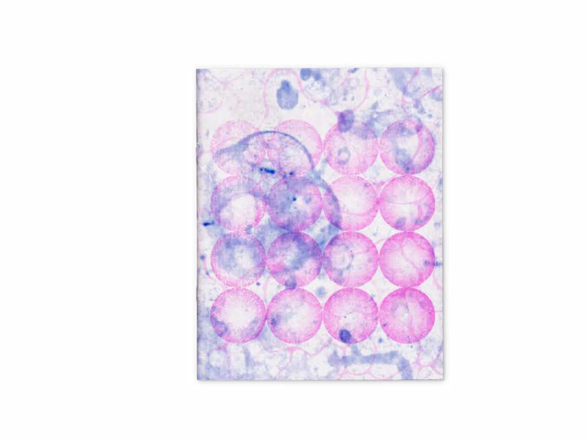
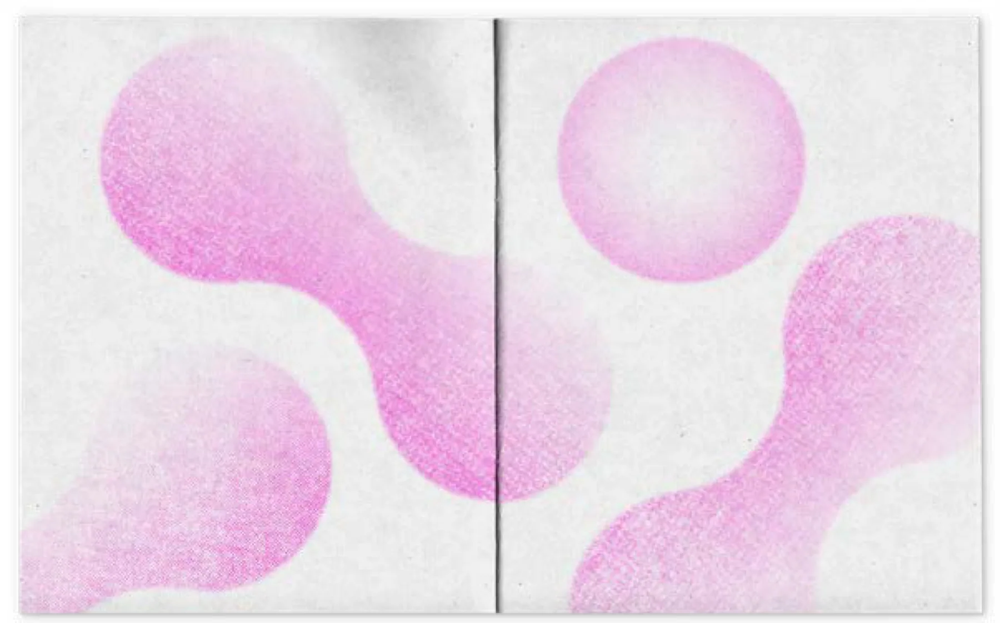
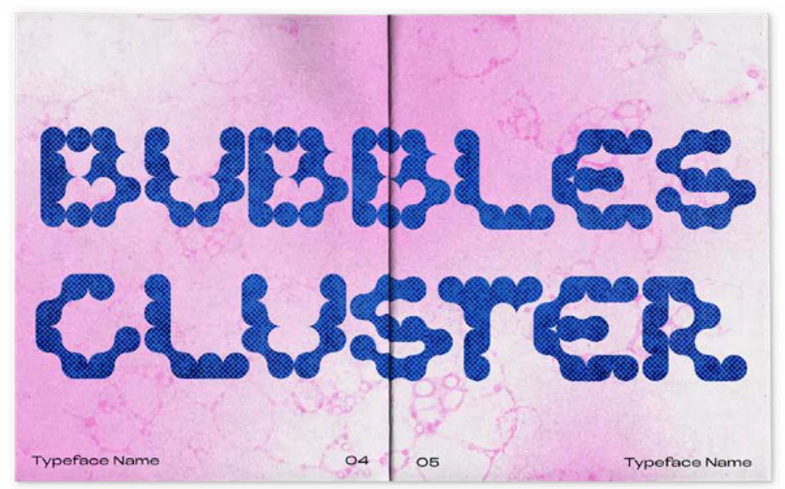
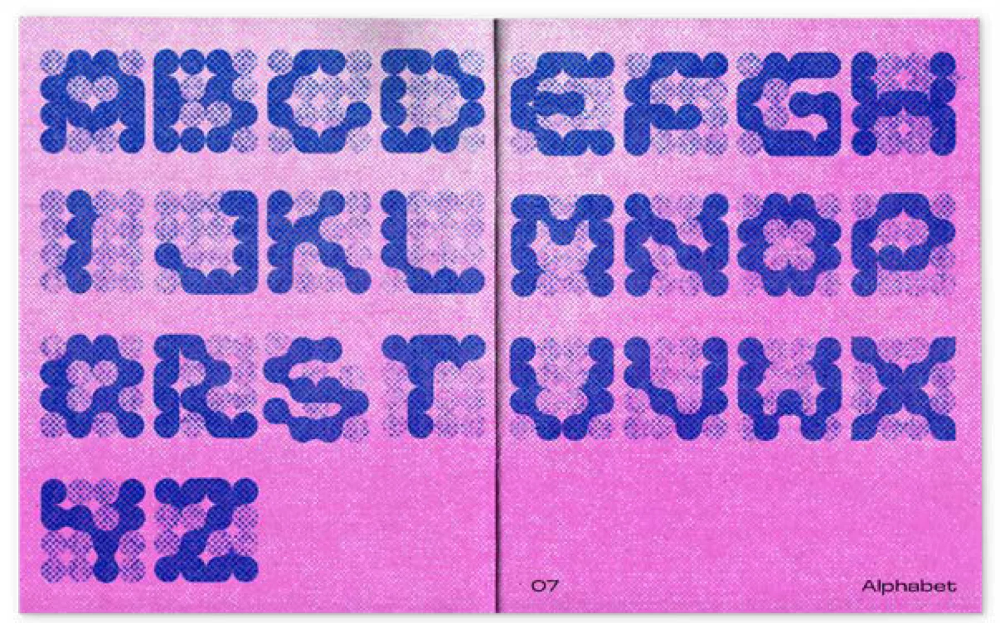
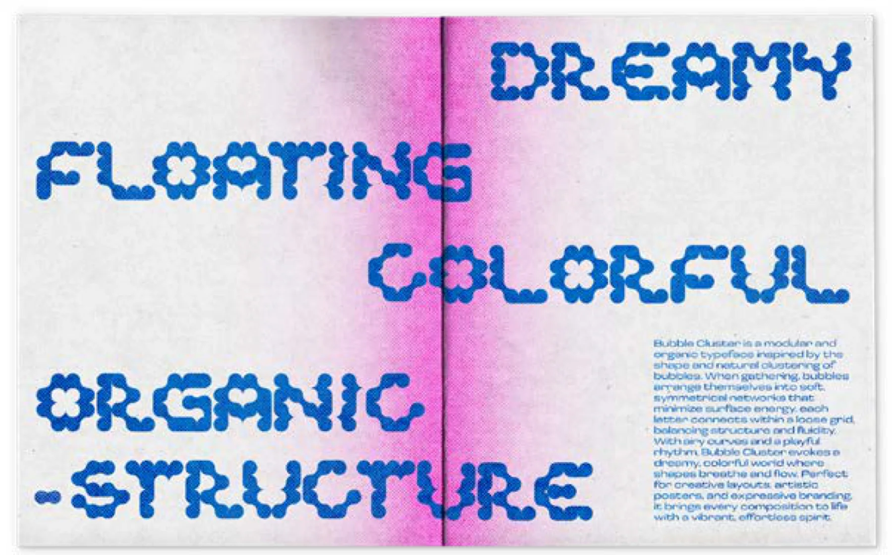
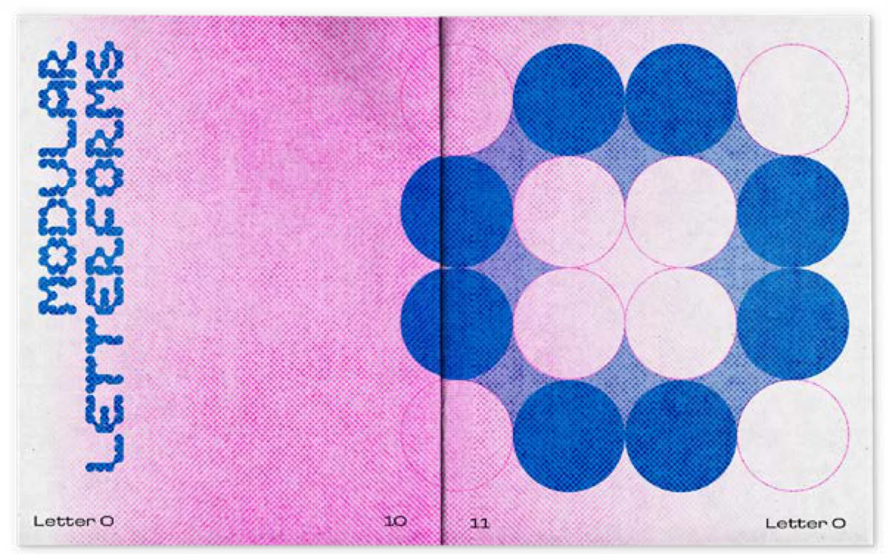
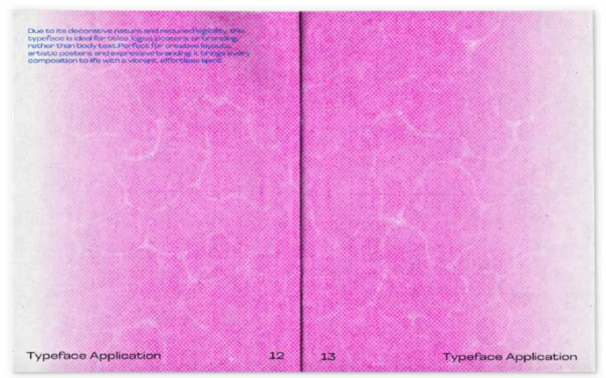
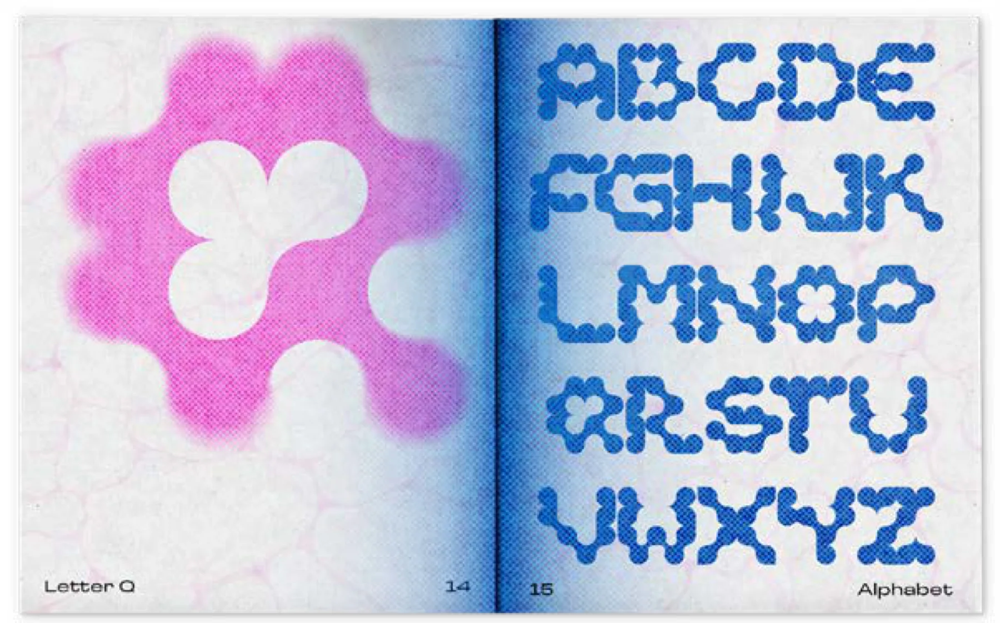
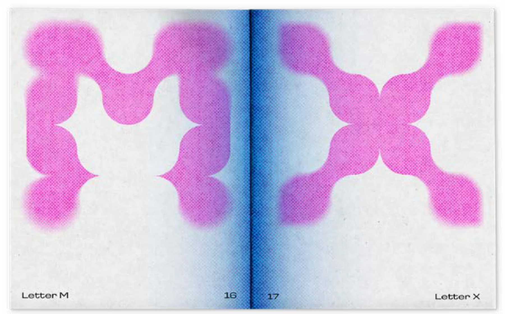
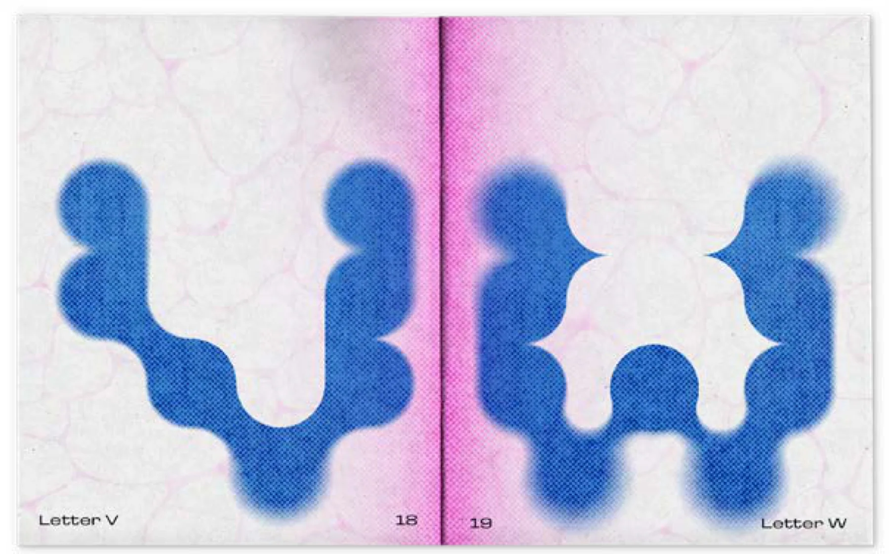
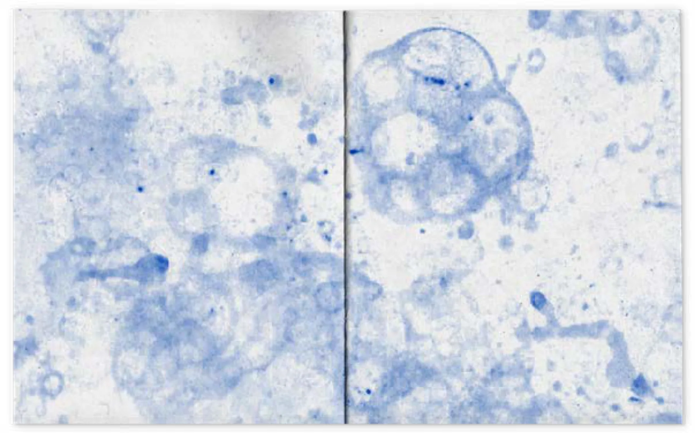
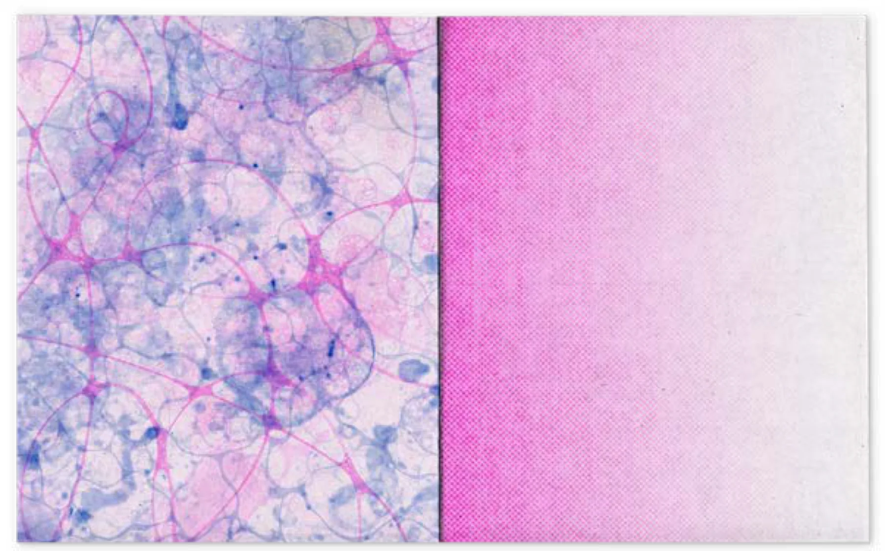
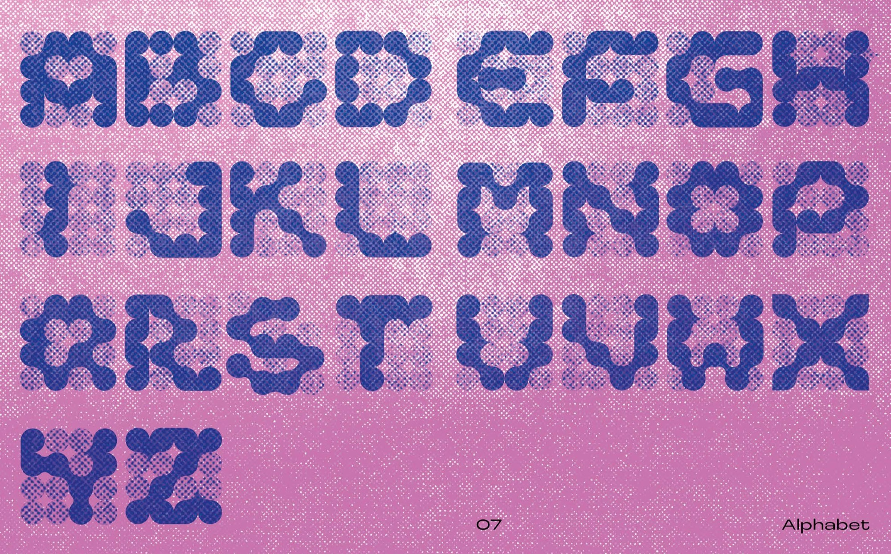